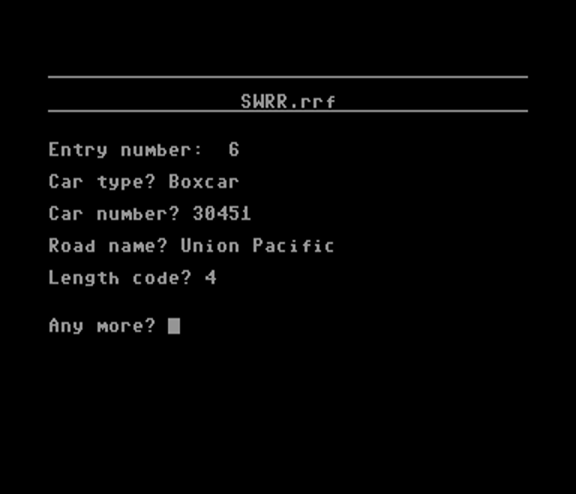
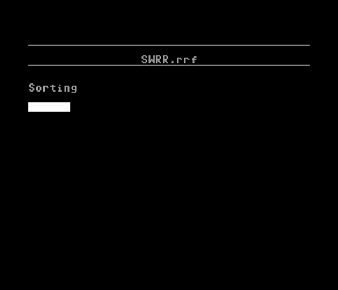
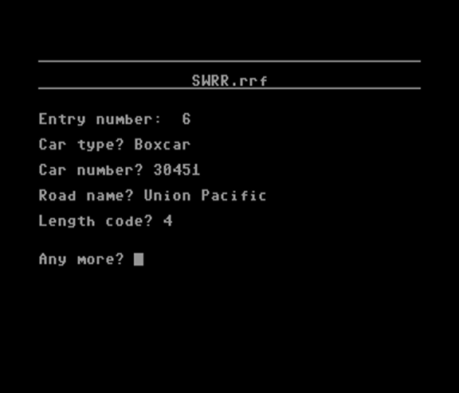
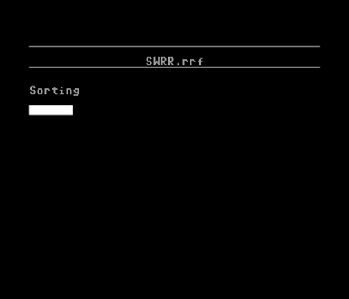

10 rem **************
20 rem ** railroad **
30 rem ** roster **
40 rem **************
50 rem by mike lewis (c) 1991
51 gosub 55:goto 100
55 dim c(8),ty$(100),n$(100),rn$(100),
lc$(100):mk=0:return
100 gosub 1000
110 print "MAIN MENU options are:"
120 print:print "1) Edit file"
130 print:print "2) Make file"
140 print:print "3) Delete file"
145 print:print "4) Rename file"
150 print:print "5) Directory"
155 print:print "6) Quit"
160 ns$="6":fa=56192:gosub 2500
200 on a goto 250,700,730,750,5000,2000
250 gosub 1000:print "Enter ROAD NAME:";
:input rn$
255 rn$=left$(rn$,11)+".rrf"
260 fi$="0:"+rn$+",s,r"
270 open 9,8,9,fi$
280 gosub 1500
285 if a$>"00" then print""er$:for
i=1
to 2000:next:close 15:close 9:goto
100
310 er$="Ok."
320 input#9,fl
330 for l=1 to fl
335 input#9,ty$(l),n$(l),rn$(l),lc$(l)
340 next:close 15:close 9
345 rem ** heading **
350 gosub 3000
365 print "Number of cars:";fl
370 print:print "EDIT MENU options
are:"
375 print:print "1) View file"
377 print:print "2) Sort file"
380 print:print "3) Edit entry"
385 print:print "4) Add entry"
390 print:print "5) Delete entry"
395 print:print "6) Save Updates"
400 print:print "7) MAIN MENU"
405 ns$="7":fa=56272:gosub 2500
410 on a goto 415,4300,500,600,540,570
,100
415 gosub 3000
416 print "Screen or Printer?";
417 getsp$:ifsp$="" then 417
420 if sp$="p" or sp$="P" then dn=4
:goto 430
425 dn=3
430 open 7,dn
435 for zl=1 to fl
440 if dn=3 then gosub 3000
441 if dn=4 then ch=17:goto 443
442 ch=1
443 cmd7
444 print:printchr$(ch);"Entry number: "
;zl
445 print:printchr$(ch);"Car type: "
;ty$(zl)
450 print:printchr$(ch);"Car number: "
;n$(zl)
455 print:printchr$(ch);"Road name: "
;rn$(zl)
460 print:printchr$(ch);"Length code: "
;lc$(zl)
465 for ul=1 to 20:print"__";:next
470 if dn=4 then next:print#7
475 print:print "PRESS ANY KEY":print
"Press M for menu"
480 get a$:if a$="" then 480
481 if a$="m" or a$="M" then close7
:goto345
482 if dn=4 then goto 490
485 next
490 close7:goto 345
500 rem *** edit entry ***
505 gosub 3000
506 print:print"Entry number";:input en
508 gosub 3000
510 print "Car type: "ty$(en)
511 for wl=1 to len(ty$(en)):lf$=lf$+""
:next:lf$=lf$+""
512 print "Car number: "n$(en)
514 print "Road name: "rn$(en)
516 print "Length code: "lc$(en)"e"
517 for i=1 to 20:print "££";:next
518 print "Car type";:input lt$
519 if lt$="" then lt$=ty$(en)
520 print "Car number";:input tn$
521 if tn$="" then tn$=n$(en)
522 print "Road Name";:input tr$
523 if tr$="" then tr$=rn$(en)
524 print "Length Code";:input tl$
525 if tl$="" then tl$=lc$(en)
526 print "ARE YOU SURE";:input wl$
527 if wl$="y" or wl$="Y" then goto 529
528 goto 345
529 ty$(en)=lt$:n$(en)=tn$:rn$(en)=tr$
:lc$(en)=tl$
530 print:input "Any More";wl$
532 if wl$="Y" or wl$="y" then goto 505
534 goto 345
540 rem *** delete entry ***
542 gosub 3000
544 print "Entry number";:input en
546 print:input "Are You SURE";wl$
548 if wl$="Y" or wl$="y" then goto 552
550 goto 345
552 for dl=en to en+(fl-en)
554 ty$(dl)=ty$(dl+1)
556 n$(dl)=n$(dl+1)
558 rn$(dl)=rn$(dl+1)
560 lc$(dl)=lc$(dl+1)
562 print ".";:next
563 ty$(fl)="":n$(fl)="":rn$(fl)=""
:lc$(fl)=""
564 fl=fl-1:goto 345
570 rem *** save changes ***
571 rn$=left$(rn$,12)+".rrf"
572 fi$="@0:"+rn$+",s,w"
573 open 9,8,9,fi$
574 print#9,fl
575 cmd9:for rl=1 to fl
576 print ty$(rl)
577 print n$(rl)
578 print rn$(rl)
579 print lc$(rl)
580 next
590 print#9:close9:goto 345
600 rem *** add entry ***
602 fl=fl+1
604 gosub 3000
606 print "Entry number: ";fl
608 print:input "Car type";ty$(fl)
610 print:input "Car number";n$(fl)
612 print:input "Road name";rn$(fl)
614 print:input "Length code";lc$(fl)
615 print:print:input "Any more";wl$
616 if wl$="y" or wl$="Y" then goto 600
617 goto 345
700 rem *** make file ***
702 fl=1
704 gosub 1000
706 print:input "Railroad name";rn$
707 rn$=left$(rn$,11)+".rrf"
708 fi$="0:"+rn$+",s,w"
710 open 9,8,9,fi$
712 open 15,8,15
714 input#15,a$
716 ifa$="63"thenprint"Sorry, file
exists.":fortd=1to2000:next:goto 722
718 if a$>"00" and a$<>"63"then
print"Disk Error.":fordt=1to2000:
next:goto100
720 print#9,fl
722 close 9:close15:goto 100
730 rem *** delete file ***
731 goto 4000
732 gosub 1000
733 print:print "DELETE FILE"
734 print:input "Name of Railroad";rn$
736 print:print "ARE YOU SURE?";
737 get wl$:if wl$="" then 737
738 if wl$="y"or wl$="Y" then goto 740
739 goto 100
740 fi$="s0:"+left$(rn$,11)+".rrf"
742 open15,8,15:print#15,fi$:close15
744 goto 100
750 rem *** rename ***
752 gosub 1000
754 print:input "Old Railroad Name";
no$
756 print:input "New Railroad Name";
nn$
758 print:print ""no$" to "nn$""
760 print:input "Correct";wl$
762 if wl$="y" or wl$="Y" then goto 766
764 goto 100
765 nn$=left$(nn$,11)+".rrf":no$=
left$(nn$,11)+".rrf"
766 fi$="r0:"+nn$+"=0:"+no$
768 open 15,8,15:print#15,fi$:close15
770 goto 100
1000 rem *** title ***
1005 print chr$(14);chr$(8)
1010 print "":poke53280,0:poke53281,0
1020 for i=1 to 20:print "__";:next
1025 print:print tab(6);"Railroad
Roster, Version 2.1"
1030 print tab(14);"by Mike Lewis"
1035 print
1040 fori=1 to 20:print "";:next
1050 print
1070 return
1500 open 15,8,15:input#15,a$
1510 if a$="62" then er$="Not Found"
:goto 1530
1520 if a$<>"62"and a$<>"00"
then er$="Disk Error":goto 1530
1525 er$="Ok."
1530 return
2000 print ""chr$(142);chr$(9):end
2500 print:print "Enter selection:";
2505 c(1)=1:c(2)=15:c(3)=12:c(4)=11
:c(5)=11:c(6)=12:c(7)=15:c(8)=1
2510 cx=cx+1:pokefa,c(cx):if cx=8 then
cx=0
2520 get a$:if a$="" then 2510
2525 if a$<"1" or a$>ns$ then goto
2510
2530 print ""a$""
2540 a=val(a$):return
3000 print "":for i=1 to 20:print "__";
:next
3002 rn$=left$(rn$,11)
3005 print:print tab(20-(len(rn$)/2));
rn$
3010 fori=1 to 20:print "";:next:print
3015 return
4000 rem *** warning ***
4010 restore:print "";chr$(142)
4020 for ob=1 to 51:read x,y,va
4030 poke 1024+x+(y*40),va:next
4040 print ""tab(12)"w a r n i n g !"
4041 print ""tab(12)"deleting a file
will"
4042 print tab(12)"erase it -"
4043 printtab(12)"p e r m a n e n t l y
!"
4044 print:printtab(12)"are you sure?"
4050 li(1)=55296+3+(40*9):li(2)=55296+9
+(40*9)
4060 a=2:b=0
4070 gosub 4120:gosub4100
4080 a=0:b=2
4090 gosub 4120:gosub4100:goto 4060
4100 get a$:if a$="" then return
4110 if a$="y"or a$="Y" then goto 732
4115 if a$="n" or a$="N" then goto 100
4120 poke li(1),a:pokeli(2),b:gosub 4200
:fort=1to200:next:return
4130 data 4,2,77,6,2,81,8,2,78,5,3,77,6
,3,66,7,3,78,6,4,86,5,5,78,6,5,66
4140 data 7,5,77,4,6,78,6,6,66,8,6,77,6
,7,66,2,8,85,3,8,64,4,8,73,6,8,66,8
,8,85
4150 data 9,8,64,10,8,73,2,9,66,3,9,81,4
,9,107,5,9,64,6,9,91,7,9,64,8,9,115
4160 data 9,9,81,10,9,66,2,10,74,3,10,64
,4,10,75,6,10,66,8,10,74,9,10,64
4170 data 10,10,75,6,11,66,6,12,66,6,13
,66,6,14,66,4,15,85,5,15,64,6,15,
113
4180 data 7,15,64,8,15,73,4,16,99,5,16
,99,6,16,99,7,16,99,8,16,99
4200 poke54296,15
4210 poke54277,9
4220 poke54278,24
4230 poke54276,33
4240 poke54273,57:poke54272,172
4250 fort=1to200:next
4260 poke54276,0:poke54273,0:poke54272,0
4280 return
4300 rem *** sort routine ***
4310 gosub 3000
4315 print:print "You can sort by-"
4320 print:print "1) Type"
4330 print:print "2) Car Number"
4340 print:print "3) Road Name"
4350 print:print "4) Length Code"
4355 print:print "5) GO BACK"
4360 n$="5":fa=56072:gosub 2500
4370 on a goto 4380,4440,4495,4550,345
4380 rem ** by type **
4390 gosub 3000
4395 print "Sorting";
4400 for sl=1 to fl-1
4405 for j=sl+1 to fl
4410 if ty$(sl)<ty$(j) then goto 4435
4415 tt$=ty$(sl):ty$(sl)=ty$(j)
:ty$(j)=tt$
4420 tt$=rn$(sl):rn$(sl)=rn$(j)
:rn$(j)=tt$
4425 tt$=n$(sl):n$(sl)=n$(j):n$(j)=tt$
4430 tt$=lc$(sl):lc$(sl)=lc$(j)
:lc$(j)=tt$
4435 next
4436 gosub 5500
4437 next:for tt=1 to 1000:next:goto 345
4440 rem ** by number **
4445 gosub 3000
4450 print "Sorting";
4455 for sl=1 to fl-1
4460 for j=sl+1 to fl
4465 if n$(sl)<n$(j) then goto 4490
4470 tt$=n$(sl):n$(sl)=n$(j):n$(j)=tt$
4475 tt$=ty$(sl):ty$(sl)=ty$(j)
:ty$(j)=tt$
4480 tt$=rn$(sl):rn$(sl)=rn$(j)
:rn$(j)=tt$
4485 tt$=lc$(sl):lc$(sl)=lc$(j)
:lc$(j)=tt$
4490 next:
4491 gosub 5500
4492 next:for tt=1 to 1000:next:goto 345
4495 rem ** by road name **
4500 gosub 3000
4505 print "Sorting";
4510 for sl=1 to fl-1
4515 for j=sl+1 to fl
4520 if rn$(sl)<rn$(j) then goto 4545
4525 tt$=rn$(sl):rn$(sl)=rn$(j)
:rn$(j)=tt$
4530 tt$=ty$(sl):ty$(sl)=ty$(j)
:ty$(j)=tt$
4535 tt$=n$(sl):n$(sl)=n$(j):n$(j)=tt$
4540 tt$=lc$(sl):lc$(sl)=lc$(j)
:lc$(j)=tt$
4545 next
4546 gosub 5500
4547 next:fortt=1to1000:goto 345
4550 rem ** by length code **
4555 gosub 3000
4560 print "Sorting";
4565 for sl=1 to fl-1
4570 forj=sl+1 to fl
4575 if lc$(sl)<lc$(j) then goto 4596
4580 tt$=lc$(sl):lc$(sl)=lc$(j)
:lc$(j)=tt$
4585 tt$=ty$(sl):ty$(sl)=ty$(j)
:ty$(j)=tt$
4590 tt$=rn$(sl):rn$(sl)=rn$(j)
:rn$(j)=tt$
4595 tt$=n$(sl):n$(sl)=n$(j):n$(j)=tt$
4596 next:gosub 5500
4597 next:for tt=1 to 1000:next:goto 345
5000 rem *** directory ***
5005 gosub 1000
5006 print:print "DIRECTORY":print
5010 tg=0:hi=1
5020 open1,8,0,"$0"
5030 get#1,a$
5040 if a$=chr$(199) then close1
:goto 5150
5050 if a$=chr$(34) and tg=0 then tg=1
:goto 5070
5060 if a$=chr$(34) and tg=1 then tg=0
:goto 5090
5070 if tg=1 then f$=f$+a$
5080 goto 5030
5090 if hi=1 then f$=""+f$+chr$(34)+""
:goto 5130
5100 if right$(f$,4)=".rrf" then goto
5120
5110 f$="":goto 5030
5120 f$=left$(f$,12)+chr$(34)
5130 print f$:f$="":if hi=1 then print
:hi=0
5140 goto 5030
5150 print:print "PRESS ANY KEY"
5160 get a$:ifa$="" then 5160
5170 goto 100
5500 rem percent display
5510 pc=int(sl/(fl/100))
5515 print "";
5520 for pb=1 to pc/5:print " ";:next
5525 print:return
 



This was the last big program I wrote on our Commodore 64, and with the exception of a few bugs, I mostly completed it.
I wanted a database to keep track of all of my HO scale model trains, so I decided to build one from scratch. The biggest thing I learned by writing this program is how to build a basic sort algorithm, working with data files on disk, and learning how to read and parse the disk directory as a data file.
I had been programming this computer for nine years, and now the world was starting to pick sides between PC and Mac. A friend of mine had an IBM PC compatible computer that introduced me to learning GW-BASIC and later Borland/Turbo Pascal which I studied extensivley in my high school computer science classes. The Commodore 64 was packed away, not to be touched for the next 15 years. I did port this to GW-BASIC on my Grandma's first PC computer, but I'd be amazed if I could find the program in tact on a disk somewhere.
·
·
Looking back, I realize that there were more elements of data I should have recorded, such as the reporting mark which is a four-letter combination, ususally the initials of the owner of the car. (E.g. DRGW, UP, ATSF, etc.)
·
·
·
·
·
·
·
·
·
·
·
·
·
·
·
·
·
·
·
One of the bugs I have noticed is the way I chose to handle the filename. Using the LEFT$() function the way I did in line 571 and in other places is fine if the typed filename was longer than 11 characters, but it creates a problem when it is shorter (especially much shorter) than 11 characters. It's one example of where my lack of experience left me a little short-sighted in the program design.
·
·
·
·
·
·
·
·
·
·
·
·
·
·
·
·
·
·
·
·
·
·
·
·
·
·
·
·
·
·
·
·
·
·
·
·
·
·
·
·
One of my favorite parts to design and code this railroad-themed warning screen. It's almost like an easter egg...
·
·
·
·
·
·
·
·
·
·
·
I really like that at this point in my learning I had grasped the concept of better program design by building everything as subroutines. This program could still be improved by exchanging GOTO statements for GOSUB statments.